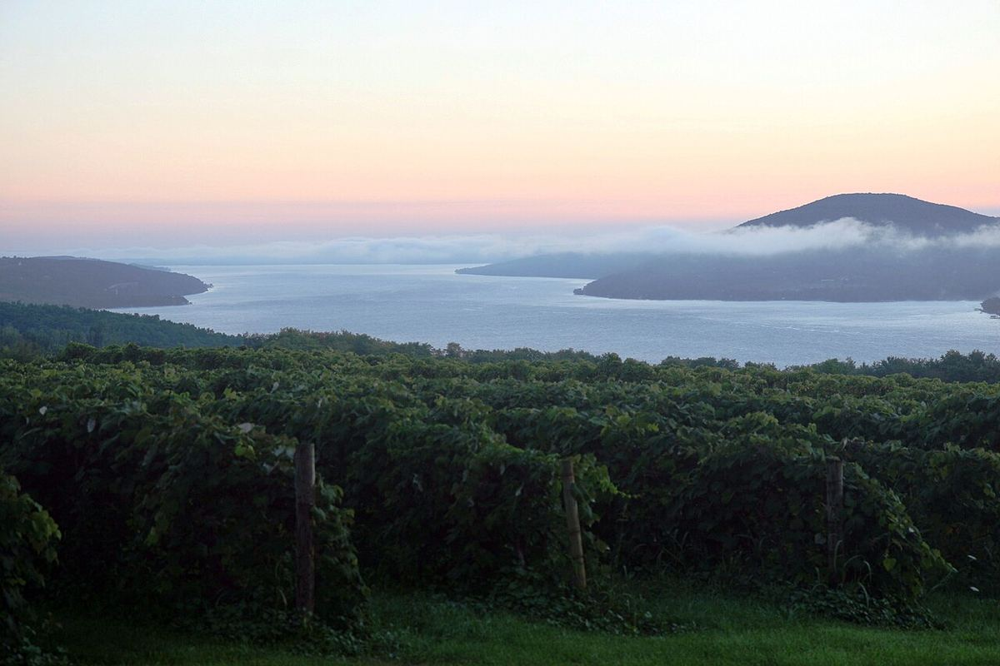

BLANCO
Inicio › Estados Unidos › Finger Lakes
AVAFinger Lakes
Región del oeste del estado de Nueva York, en torno a varios lagos alargados de origen glaciar, conocida sobre todo por sus Riesling de clima frío.

Historia
La viticultura comercial de los Finger Lakes se remonta al siglo XIX. En 1860 se fundó en Hammondsport, junto al lago Keuka, la Pleasant Valley Wine Company, que llegó a ser célebre por sus espumosos, y durante décadas la región elaboró sobre todo vinos de variedades americanas, como la Concord, la Catawba o la Niagara, y de híbridos franco-americanos, más resistentes al frío. El gran cambio llegó en los años cincuenta, cuando el doctor Konstantin Frank, un científico de origen ucraniano, demostró que la Vitis vinifera podía sobrevivir a los inviernos de la zona si se injertaba sobre portainjertos adecuados. En 1962 fundó su propia bodega, Vinifera Wine Cellars, conocida hoy como Dr. Konstantin Frank. A partir de los años setenta y ochenta, nuevos productores apostaron por el Riesling y otras variedades europeas. La región se reconoció como AVA a comienzos de los años ochenta.
Clima y suelos
Los Finger Lakes son una serie de lagos estrechos y alargados, orientados de norte a sur, excavados por los glaciares. Los más importantes para el vino son el Seneca, el Cayuga y el Keuka, junto con el Canandaigua. Su gran masa de agua, especialmente en los lagos más profundos como el Seneca, modera el clima: retrasa la brotación en primavera, prolonga el otoño y suaviza los fríos más extremos del invierno, que siguen siendo un riesgo importante. Las laderas que descienden hacia los lagos favorecen además el drenaje del aire frío. Los suelos son de origen glaciar, con gravas y limos sobre un sustrato de pizarras y esquistos arcillosos.
Subzonas
Dentro de la AVA Finger Lakes existen dos subzonas reconocidas, Seneca Lake y Cayuga Lake. Las orillas del lago Seneca concentran el mayor número de bodegas, mientras que el Keuka conserva el patrimonio histórico de Hammondsport.
Estilos
El Riesling es la variedad emblemática y se elabora en estilos que van de secos a dulces, con acidez viva y aromas cítricos y florales. También se cultivan Gewürztraminer, Chardonnay, Grüner Veltliner y, entre las tintas, Cabernet Franc, Pinot Noir y Lemberger (Blaufränkisch). Los espumosos de método tradicional y los vinos de hielo y de cosecha tardía completan la oferta, junto a los híbridos que siguen presentes en la región.